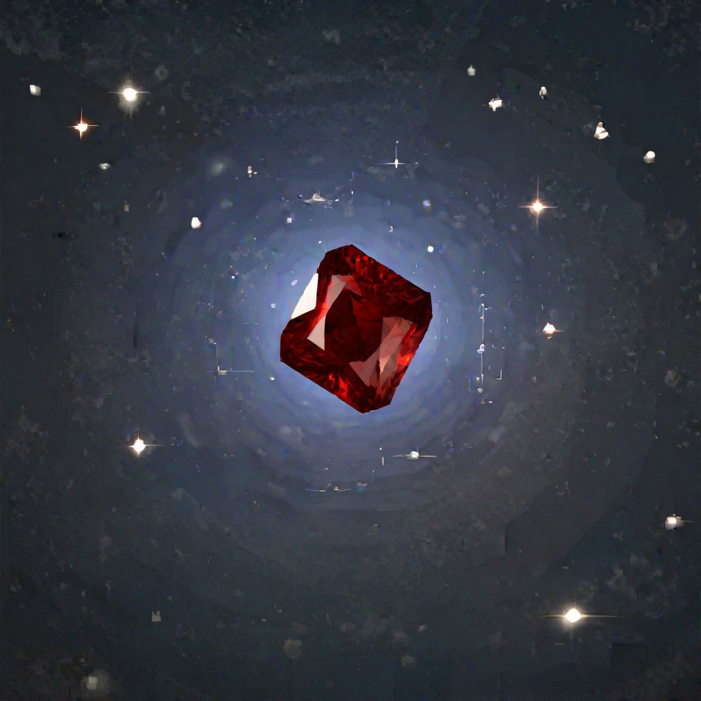

THE IMPOSSIBLE RUBY

How to craft the impossible ruby (it might kill you during the crafting)
Ingredients
- a random stone from a random trail
- a strong belief
- a hammer
The process
- Place your stone on a table
- Concentrate allyour belief into he exact middle part of the stone
- Hit the stone with your belief infused hammer, just one hard hit
- The stone will now expand in a red aura and quickly become of an impossible shape
- If you survived the previous step, you should now be the proud owner of the impossible ruby
>